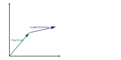
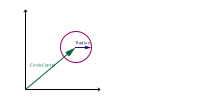

Rays
A ray is a a combination of a fixed point on a coordinate system (the origin)
and a scalable vector direction. Thy can be represented for our purposed using
two vectors; on for the origin and one for the direction with the origin vector that
has its tail on the global origin and the direction vector that has its tail on the
tip of the origin vector. Since the origin is a fixed point this means that rays
that have the same direction with different origins are not the same ray unlike vectors.
The parametric equation that defines a ray is given by:
p = o + αd
where p
is a point on the ray, o is the origin, d
is the direction unit vector, and α is is the distance from the origin that point is at along
the direction vector. Using vector notation and some linear interpolation, we can represent
the ray by the following equation:
p1 + α(p2 - p1)
or in a more concise form:
p1 + αd
where
d = (p2 - p1 /
||p2 - p1||)

Linear Interpolation (weighted average)
Linear interpolation, or lerp, is a way of taking a some percentage of two points to find the distance
between them. If we let α represent a percentage between 0% and 100% then the equation
to represent the lerp between two points is defined by:
α + (1 - α) = 1
.
Implicit Equations and Spheres
An implicit surface is a surface which is defined by an equation that will be satisfied
by any point on te surface, and that the equation is not solved for any of the variables.
This the best way o represent a circle, or in 3 dimensions a sphere. The equation for a circle
with some center (a, b) and radius r in the
can be expressed by:
(x - a)2 + (y - b)2 = r2
. This form is not very useful since we are representing the ray using vectors, so
using vector notation we find that spheres can also be defined as:
e = p - c
where e is the radius of the circle, p
is any point on the circle, and c is the enter of the circle.

Ray/Circle Intersections
Using the vector equations for both the ray and the circle, we can now solve to find where, if anywhere,
along the ray they intersect. We will be solving for the α in the following equation which is
a combination of the definitions of a ray and a circle:
||αd + o - c|| = r
. If we expand this equation we by squaring both sides and simplifying, we are left
with a quadratic equation in which α can be found using the quadratic formula:
α = (-b + sqrt(b2 - 4ac)) / 2a
where
a = d * d = 1
since d is a unit vector,
b = 2d * (o - c)
, and
c = (o - c) * (o - c) - r2
. The image below show possible values for ray intersections using
t0, t1 instead of α
Image Sources
- Linear Interpolation
-
Ray/circle Intersections